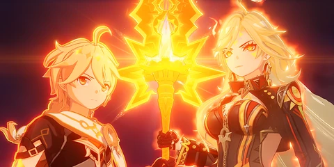

Natlan · Quest Chronicles
Incandescent Ode of Resurrection
Natlan’s Chapter V, Act V ends the war against the Abyss, gives the Traveler the Ancient Name Tumaini, and changes the Night Kingdom through Mavuika and Capitano’s choices.

The act and the final war
Incandescent Ode of Resurrection is Chapter V, Act V of the Natlan Archon Quest. It follows the preparation for a final battle in the Night Kingdom and brings Natlan’s long war against the Abyss to an end.
The title refers to the act’s central ritual and hope of returning fallen warriors. The quest also gives a specific resolution to the threat: Mavuika later tells the people that the Abyss has been defeated and that the Night Warden Wars are over.
Tumaini and the Traveler’s place in Natlan
Xilonen forges the Traveler’s Ancient Name from the Pilgrim’s Chronicle supplied by the Lord of the Night. The name is Tumaini, a word the characters explain as “hope.” Mavuika says it binds the Traveler and Natlan as kin and allows the outlander to join the expedition.
The act treats this as an unprecedented honor: the Traveler is the first outlander to receive an Ancient Name. The name records the Traveler’s deeds in Natlan; it is not a tribal title or proof that the Traveler was born there.
The Ode, the Sacred Flame, and the Night Kingdom
Mavuika describes the Night Kingdom as a realm of souls and memories. The Ode of Resurrection can return Natlanese who have fallen in battle when their side wins; the rite is not presented as an unlimited power to revive anyone at any time.
The quest explains that damage to Natlan’s Ley Lines left souls stranded and prevented the Night Kingdom from reconnecting with other nations. The Sacred Flame links the living people’s fighting spirit to the final struggle, while the Lord of the Night’s role and rules remain distinct from the Pyro Archon’s.
Capitano and the souls he carried
The act reveals that Capitano had kept the souls of his fallen comrades and many Natlanese within himself for five hundred years. He says Khaenri’ahn technology modified his heart, and that he later made it a vessel for those souls after encountering them during the Cataclysm.
He came to Natlan because its Ley Lines and the Night Kingdom offered the only way he could see to give those souls a home. His goal is tied to the curse of immortality imposed on him and his wish to challenge the rules that left them stranded; the quest presents this as his motive, not as a general account of every Khaenri’ahn survivor.
Mavuika’s intended sacrifice and the changed bargain
After the victory, Mavuika plans to place her remaining life in the Sacred Flame to sustain the Lord of the Night and protect Natlan’s future. She expects this to last for centuries, but it would cost her the life she has built in the present.
Capitano offers himself instead. By merging his existence with the Lord of the Night, he returns the gathered souls to the Ley Lines and changes the conditions that kept them from finding rest. The dialogue describes this both as his sacrifice and as a union with the Lord of the Night; it is more complicated than an ordinary battlefield death.
A future beyond the Pilgrimage of the Sacred Flame
Mavuika wants the Pilgrimage to stop selecting warriors for a war that Natlan no longer needs to fight. She proposes keeping it as a tournament, with competition driven by people’s ambitions rather than the threat of the Abyss.
In her letter to her sister Hine, Mavuika says the Night Kingdom has been restored, Natlan has entered an era of peace, and people can again travel beyond the nation’s borders. These are the act’s stated postwar changes; they do not mean Natlan forgets the dead or the cost of the conflict.
What the ending resolves
The Archon Quest records the Abyssal war’s end, the Traveler’s Ancient Name, Mavuika’s survival, Capitano’s choice, and a changed role for the Pilgrimage. Its memorial scenes make grief part of the resolution: the people honor both the Natlanese who died and the Fatui Harbinger who fought for them.
Capitano’s final state is described through his fusion with the Lord of the Night and his release from the curse’s mortal torment. The quest does not depict him simply returning to ordinary life, and this guide does not treat later speculation about his fate as confirmed canon.
Reading the story in sequence
Act V draws on earlier Natlan chapters: the failed attempt to bring Kachina back, the Pilgrimage, the Night Kingdom’s weakening Ley Lines, and the conflict between Mavuika and Capitano. Read those events in the preceding acts before treating the finale as a standalone account.
The linked full dialogue transcript is the reference for scene details. HoYoverse’s Version 5.3 trailer establishes the official act title and release framing, while the wiki link is included as a navigational cross-reference rather than a substitute for the game dialogue.
This is an original CoreGG reading guide, not an official HoYoverse article or a reproduction of the game text. Source links below identify the records used so you can check the original context.
Sources & references
Check these sources for the original game text and reference trail.